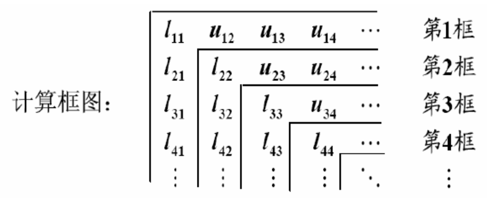
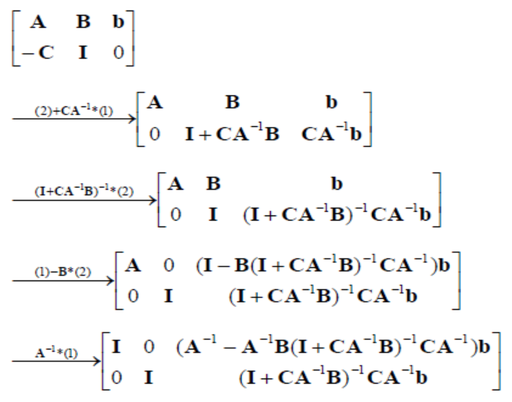

[矩阵论]4.1矩阵的三角分解
高斯消元法
初等矩阵：初等行变换可以用左乘初等矩阵表示：
交换两行：设 \(u_{i,j}=(e_i-e_j)/\sqrt{2}\)， \[ I-2u_{i,j}u_{i,j}^T \]
第 \(i\) 行乘以 \(\alpha\) 加到第 \(j\) 行： \[ I+\alpha e_je_i^T \]
第 \(i\) 行乘以 \(\alpha\)： \[ I+(\alpha-1)e_ie_i^T \]
消元因子：第 \(k\) 步消元时，若 \(a_{kk}^{(k)}\neq 0\)，则乘上消元因子 \(m_{ik}=a_{ik}^{(k)}/a_{kk}^{(k)}\) 减到第 \(i\) 行，其中 \(i=k+1,\ldots,n\). 这相当于左乘矩阵： \[ L_k=I-\left(\sum_{i=k+1}^nm_{ik}e_i\right)e_k^T=I-l_ke_k^T \] 其中 \(l_k=(0,\ldots,0,m_{k+1,k},m_{k+2,k},\ldots,m_{nk})^T\).
定理：消元过程不改变矩阵的顺序主子式。
引理：约化的主元素 \(a_{ii}^{(i)}\neq 0\) 的充要条件是矩阵 \(A\) 的顺序主子式 \(D_i\neq 0\,(i=1,\ldots,k)\).
推论：若矩阵 \(A\) 的顺序主子式 \(D_i\neq 0\,(i=1,\ldots,k)\)，则： \[ a_{11}^{(1)}=D_1,\quad a_{ii}^{(i)}=D_i/D_{i-1} \]
定理：若 \(A\) 是正定矩阵，则一次消元后剩下的矩阵依旧是正定的。
定理：若 \(A\) 严格对角占优，则一次消元后剩下的矩阵依旧是严格对角占优的。
LU 分解和 LDU 分解
LU 分解：高斯消元的过程可以用 LU 分解表示： \[ \underbrace{L_{n-1}L_{n-2}\cdots L_2L_1}_{L^{-1}} A=U\implies A=LU \] 其中 \(L\) 为单位下三角矩阵，\(U\) 为上三角矩阵。
LDU 分解：\(A=LDU\)，其中 \(L\) 为单位下三角矩阵，\(U\) 为单位上三角矩阵，\(D\) 为对角矩阵。
定理：设 \(A\) 是 \(n\) 阶方阵，当且仅当 \(A\) 的顺序主子式 \(\Delta_i\neq 0\) 时，\(A\) 可唯一分解为 \(A=LDU\)，其中： \[ D=\text{diag}(d_1,\ldots,d_n),\quad d_k=\frac{\Delta_k}{\Delta_{k-1}} \] 推论：\(n\) 阶非奇异方阵 \(A\) 有 LU 分解 \(A=LU\) 的充要条件是顺序主子式 \(\Delta_i\neq 0\).
带有置换矩阵的三角分解：设 \(A\) 是 \(n\) 阶非奇异方阵，则存在置换矩阵 \(P\)，使得： \[ PA=L\hat U=LDU \] 其中 \(L\) 为单位下三角矩阵，\(\hat U\) 为上三角矩阵，\(U\) 为单位上三角矩阵，\(D\) 为对角矩阵。
Doolittle 分解和 Crout 分解
Doolittle 分解：把 LDU 分解中的 \(DU\) 结合起来用 \(\hat U\) 表示，得到唯一的分解： \[ A=L(DU)=L\hat U \] Crout 分解：把 LDU 分解中的 \(LD\) 结合起来用 \(\hat L\) 表示，得到唯一的分解： \[ A=(LD)U=\hat LU \] 计算方法（以 Doolittle 分解为例）：比较等式两边的元素逐行逐列求解 \(L,U\) 各元素： \[ \begin{bmatrix} a_{11}&a_{12}&\cdots&a_{1n}\\ a_{21}&a_{22}&\cdots&a_{2n}\\ \vdots&\vdots&\ddots&\vdots\\ a_{n1}&a_{n2}&\cdots&a_{nn}\\ \end{bmatrix}= \begin{bmatrix} 1&&&\\ l_{21}&1&&\\ \vdots&\vdots&\ddots&\\ l_{n1}&l_{n2}&\cdots&1\\ \end{bmatrix} \begin{bmatrix} u_{11}&u_{12}&\cdots&u_{1n}\\ &u_{22}&\cdots&u_{2n}\\ &&\ddots&\vdots\\ &&&u_{nn}\\ \end{bmatrix} \] 计算顺序：

对称正定矩阵的 Cholesky 分解
Cholesky 分解： \[ A=L\tilde D^2L^T\quad A=LDL^T\quad A=LL^T \] 第二种表示中，\(D\) 的对角元都大于零；第三种表示中，\(L\) 的对角元都大于零。
计算方法：与上一节 Doolittle 分解的计算类似，逐行逐列计算即可： \[ \begin{bmatrix} a_{11}&a_{12}&\cdots&a_{1n}\\ a_{21}&a_{22}&\cdots&a_{2n}\\ \vdots&\vdots&\ddots&\vdots\\ a_{n1}&a_{n2}&\cdots&a_{nn}\\ \end{bmatrix}= \begin{bmatrix} l_{11}&&&\\ l_{21}&l_{22}&&\\ \vdots&\vdots&\ddots&\\ l_{n1}&l_{n2}&\cdots&l_{nn}\\ \end{bmatrix} \begin{bmatrix} l_{11}&l_{12}&\cdots&l_{1n}\\ &l_{22}&\cdots&l_{2n}\\ &&\ddots&\vdots\\ &&&l_{nn}\\ \end{bmatrix} \] 可得： \[ l_{jj}=\left(a_{jj}-\sum_{k=1}^{j-1}l_{jk}^2\right)^{1/2},\quad l_{ij}=\left(a_{ij}-\sum_{k=1}^{j-1}l_{ik}l_{jk}\right)/l_{jj} \] 该计算方法的缺点是有开方运算，在计算机中可能出现根号下负数。
改进的 Cholesky 分解：所谓改进的 Cholesky 分解，其实就是指 \(A=LDL^T\)，其计算过程不涉及开方： \[ \begin{bmatrix} a_{11}&a_{12}&\cdots&a_{1n}\\ a_{21}&a_{22}&\cdots&a_{2n}\\ \vdots&\vdots&\ddots&\vdots\\ a_{n1}&a_{n2}&\cdots&a_{nn}\\ \end{bmatrix}= \begin{bmatrix} 1&&&\\ l_{21}&1&&\\ \vdots&\vdots&\ddots&\\ l_{n1}&l_{n2}&\cdots&1\\ \end{bmatrix} \begin{bmatrix} d_1&d_1l_{12}&\cdots&d_1l_{1n}\\ &d_2&\cdots&d_2l_{2n}\\ &&\ddots&\vdots\\ &&&d_n\\ \end{bmatrix} \] 逐行逐列计算可得： \[ l_{ij}=\left(a_{ij}-\sum_{k=1}^{j-1}l_{ik}d_kl_{jk}\right)/d_j,\quad d_i=a_{ii}-\sum_{k=1}^{j-1}l_{ik}^2d_k \]
分块矩阵的拟 LU 分解和拟 LDU 分解
只考虑 2 阶的分块矩阵： \[ A=\begin{bmatrix}A_{11}&A_{12}\\A_{21}&A_{22}\end{bmatrix} \] 若 \(A_{11}\) 可逆，设： \[ L=\begin{bmatrix}I_{n_1}&0\\-A_{21}A_{11}^{-1}&I_{n_2}\end{bmatrix} \] 则： \[ LA=\begin{bmatrix}A_{11}&A_{12}\\0&A_{22}-A_{21}A_{11}^{-1}A_{12}\end{bmatrix} \] 若 \(A_{22}\) 可逆，可右乘矩阵（作列变换）得到类似的结果。
求逆引理（Woodbury 公式）： \[ (A+BC)^{-1}=A^{-1}-A^{-1}B(I+CA^{-1}B)^{-1}CA^{-1} \]
证明：考虑方程 \((A+BC)x=b\)，令 \(y=Cx\)，则： \[\begin{bmatrix}A&B\\-C&0\end{bmatrix}\begin{bmatrix}x\\y\end{bmatrix}=\begin{bmatrix}b\\0\end{bmatrix}\] 利用高斯消元法：

故解得： \[x=(A^{-1}-A^{-1}B(I+CA^{-1}B)^{-1}CA^{-1})b\] 又 \(x=(A+BC)^{-1}b\)，由 \(b\) 的任意性可知命题成立。证毕。
推论： \[ (A+BD^{-1}C)^{-1}=A^{-1}-A^{-1}B(D+CA^{-1}B)^{-1}CA^{-1} \]